, so the amplitude is Rayleigh distributed and the intensity negative exponential with mean
, so the amplitude is Rayleigh distributed and the intensity negative exponential with mean  and standard deviation equal to its mean: multiplicative noise.
and standard deviation equal to its mean: multiplicative noise.Statement
Hypotheses on a homogeneous area:
 elementary scatterers per cell, with independent amplitudes
elementary scatterers per cell, with independent amplitudes 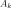
and phases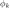
;- phases uniform on
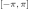
, independent of amplitudes; - large.
Then with
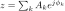
,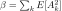
: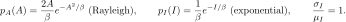
Derivation
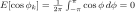
, so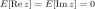
. Cross terms vanish by independence, and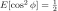
: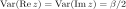
, uncorrelated. With large, by the central limit theorem 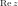
and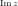
are independent Gaussians; the modulus of a 2-D isotropic Gaussian is Rayleigh, its square exponential (chi-square with 2 degrees of freedom). The intensity can be written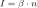
with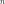
unit-mean exponential noise: the noise multiplies the signal.Picture
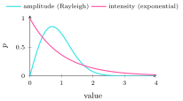
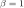
: the most likely intensity is zero, even on a bright target.Multi-look
Averaging  independent looks gives a Gamma-distributed intensity with
independent looks gives a Gamma-distributed intensity with
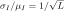
; the equivalent number of looks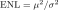
measures the residual speckle on a homogeneous area.Intuition
Speckle is interference, not noise in the electronic sense: the same scene seen again from the same place gives the same speckle; a slight change of view gives a completely different one.
Pitfall
Because speckle is multiplicative, a single bright pixel is not evidence of a strong target, and differences between images must be measured as ratios (or in dB), not differences.